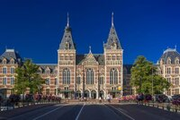
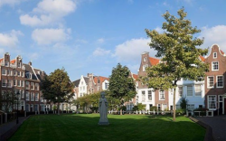
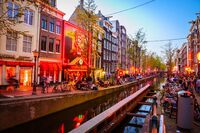
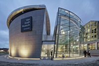

Thinking about traveling on vacation or just wanting to experience new cities and cultures from the comfort of your Home Office? Well, thinking about the two cases I created this Website inspired by one of the places I love most in the world, Amsterdam. Here you will get to know a little of this city so cozy and beautiful! So without further ado here it is, My Favorite Places in Amsterdam!

Rijksmuseum
The famous museum is the most visited in Holland and also the biggest, it's like the Louvre in Amsterdam. In its installations there are hundreds of paintings, including Rembrandt's famous Night Watch. For those who love history, culture and art, a visit to the Rijksmuseum is certainly a must.
Dam Square and the Royal Palace
Dam Square is located right in the center of the city. Possibly 90% of visitors who pass through Amsterdam end up visiting the square, even if unintentionally. Over there, there is also the Royal Palace which, despite not being the official residence of the King, is still one of the residences of royalty. The palace is open for visits and offers a tour to discover its medieval details and the beautiful paintings that are preserved in this beautiful monument. It's a great experience for history lovers.

Begijnhof
In the Spui square there is a small door that leads to a “residence” very popular among visitors to the capital of the Netherlands. Behind that door is a spectacular and silent garden with houses dating back to the 17th and 18th centuries. Truly, it looks like that little place has stopped in time, simply spectacular.

Red Light District
Amsterdam's famous Red Light district is world renowned, and perhaps the most popular among many tourists visiting the capital of the Netherlands. The red fluorescent lights present in several windows in this part of the city are a hallmark of the place. Perfect for a night on the town!

Van Gogh Museum
Speaking of culture and art, here's another Amsterdam tourist spot that can't be missing from your list: Van Gogh Museum. It is home to approximately 200 paintings by the painter, and where the most famous of his works are housed. A nice tip for those visiting the museum is also to take a few minutes to visit the souvenir shop and collect several souvenirs back home!